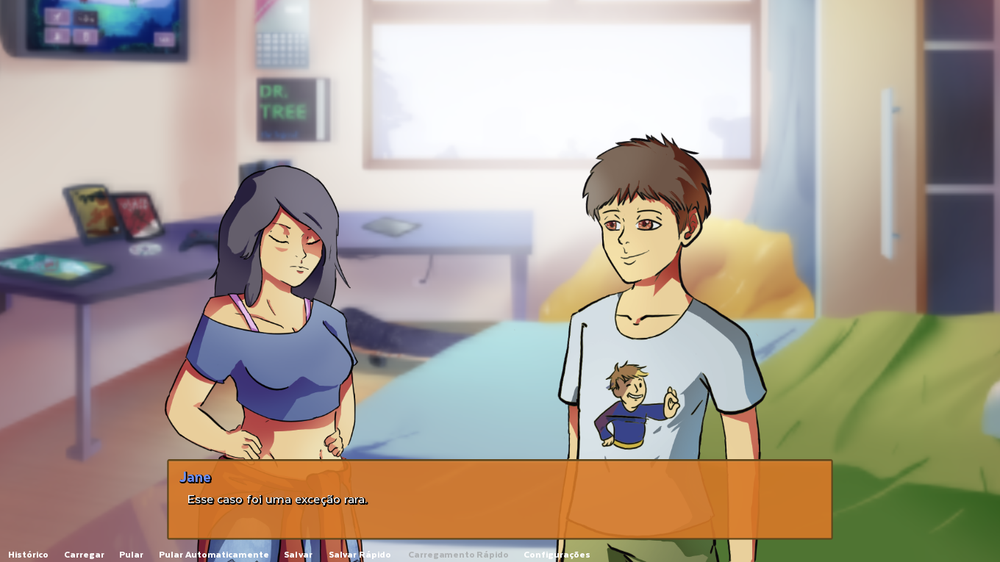
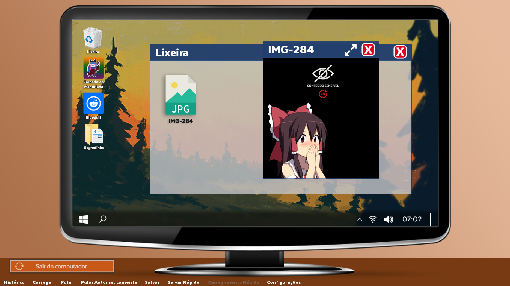
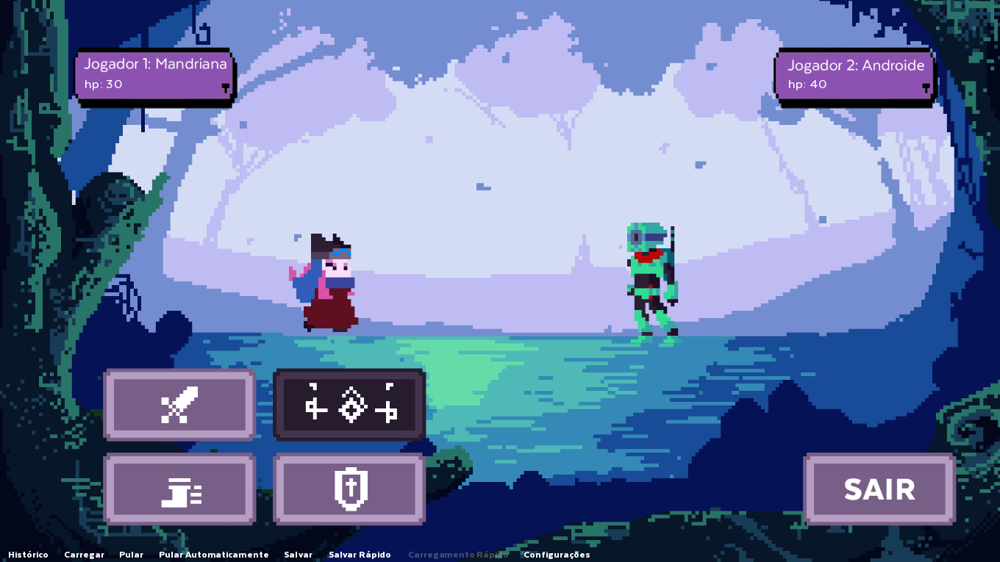
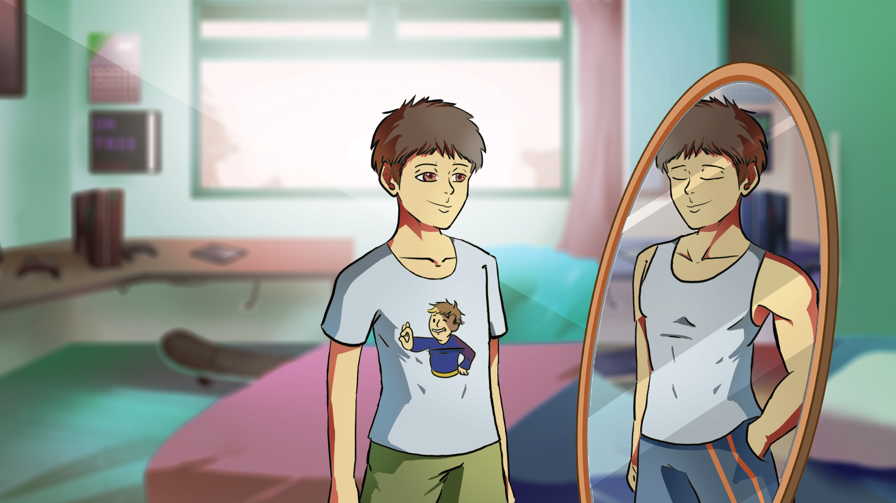
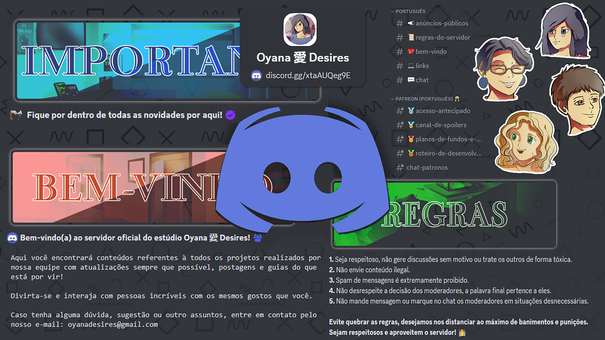

QUAIS SÃO NOSSOS PLANOS?
Criar mais e aperfeiçoar o que já foi criado! Temos muitas ideias incríveis para expandir o jogo e estamos constantemente refinando o que já criamos. Fique de olho — de tempos em tempos, soltamos pequenos spoilers para quem não aguenta esperar!
EU VOU GOSTAR DO JOGO?
Que tal baixar e nos contar? Grande parte do que criamos veio diretamente dos feedbacks da comunidade — até os menores comentários se transformaram em grandes ideias. Não sabemos exatamente do que você gosta, mas pode ter certeza de que estamos fazendo o possível para te surpreender.
QUAL O DIFERENCIAL DO BETA LIFE?
Compare as versões e tire suas próprias conclusões! Nos esforçamos ao máximo para entregar uma experiência completa, e aqui está um resumo do que você pode encontrar:
🟢 Mundo aberto
🟢 Opção de censura +18
🟢 Mais de 50 músicas originais de diversos gêneros
🟢 Mini-games envolventes
🟢 Sistema de personalidade e relacionamentos
🟢 Rotina dinâmica com sistema de horários
🟢 Celular e computador funcionais (bateria, redes sociais, apps, etc.)
🟢 Cenas exclusivas baseadas nas suas escolhas
🟢 Sistema de conquistas
🟢 Tradução completa (textos, imagens e referências)
🟢 Personalização geral do jogo

POR QUE APOIAR O JOGO?
Seu apoio significa o mundo para nós! Seja divulgando, sugerindo ideias ou contribuindo financeiramente, sua ajuda faz toda a diferença. Se decidir nos apoiar, seu nome será eternizado no projeto e, além disso, doadores recebem recompensas exclusivas. Pode ter certeza de que cada centavo será investido para tornar esse jogo ainda melhor!
  